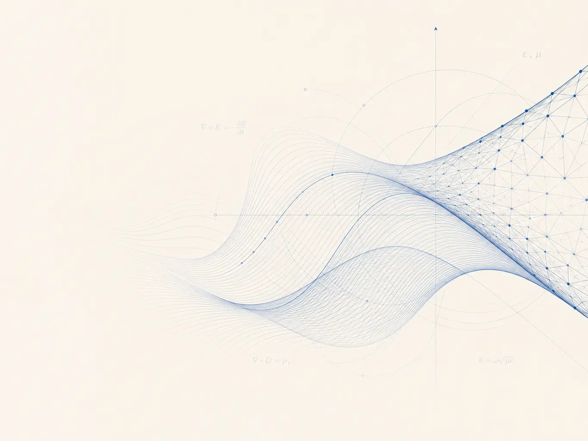

Boundary integral equations
Stable and well-conditioned formulations for frequency- and time-domain electromagnetic scattering, including MFIE, CFIE, PMCHWT, and Müller equations.
Postdoctoral Researcher · Ghent University — imec
I develop robust boundary and finite element methods for wave propagation, electromagnetics, and partial differential equations— connecting rigorous analysis with reliable scientific computing.

Research
My work sits at the interface of applied mathematics and computational engineering, with a focus on methods that remain accurate and efficient in challenging physical regimes.
Stable and well-conditioned formulations for frequency- and time-domain electromagnetic scattering, including MFIE, CFIE, PMCHWT, and Müller equations.
Space–time discretizations and interface-fitted schemes for moving-domain, advection–diffusion, and multiphysics problems.
Operator preconditioning, quasi-Helmholtz decompositions, and numerical algorithms built for reliable engineering simulation.
Selected recognition
Awarded at the URSI General Assembly and Scientific Symposium.
Invited talk on a second-kind boundary integral formulation for scattering by composite objects, Vienna.
Fellowship supporting research in computational electromagnetics.
Award for computational techniques in electromagnetics.
Publications
C. Münger, A. Zuccotti, V. C. Le, and K. Cools
Submitted
Q. H. Nguyen, V. C. Le, and K. Cools
Submitted
S. Verbruggen, V. C. Le, P. Escapil-Inchauspé, C. Jerez-Hanckes, and K. Cools
URSI Radio Science Letters · accepted
V. C. Le, C. Münger, F. P. Andriulli, and K. Cools
IEEE Transactions on Antennas and Propagation · to appear
V. C. Le and K. Cools
IEEE Transactions on Antennas and Propagation
V. C. Le, V. Giunzioni, P. Cordel, F. P. Andriulli, and K. Cools
IEEE Antennas and Wireless Propagation Letters 24(12), 4720–4724
Q. H. Nguyen, V. C. Le, P. C. Hoang, and T. T. M. Ta
Applied Numerical Mathematics 211, 61–77
V. C. Le and K. Cools
SIAM Journal on Numerical Analysis 62(6), 2484–2505
V. C. Le, M. Slodička, and K. Van Bockstal
Computers & Mathematics with Applications 171, 60–81
V. C. Le, P. Cordel, F. P. Andriulli, and K. Cools
IEEE Transactions on Antennas and Propagation 72(7), 5852–5864
V. C. Le, F. P. Andriulli, and K. Cools
Proceedings of IEEE AP-S/URSI
V. C. Le, M. Slodička, and K. Van Bockstal
Applied Numerical Mathematics 173, 345–364
Experience & education
IDLab, Ghent University — imec · Ghent, Belgium
NaM², Ghent University · Ghent, Belgium
WorldQuant Investment Software Vietnam · Hanoi, Vietnam
Ghent University
Advanced mathematical and numerical analysis of induction hardening of steel
Hanoi University of Science and Technology
Hanoi University of Science and Technology
Contact
I welcome conversations about research collaboration, invited talks, and computational mathematics.